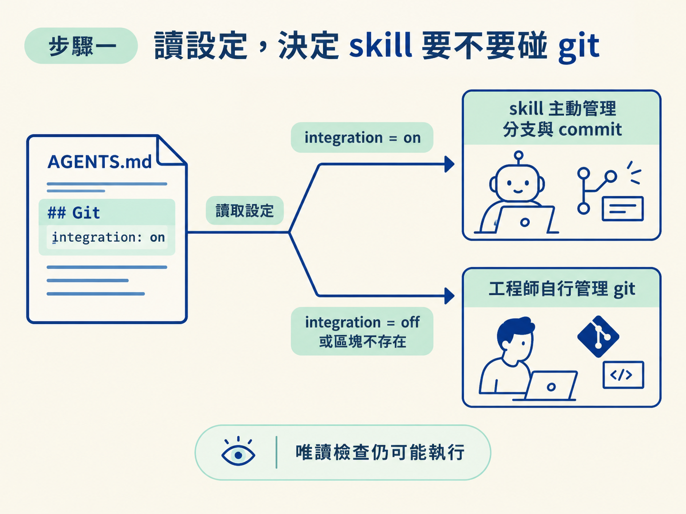
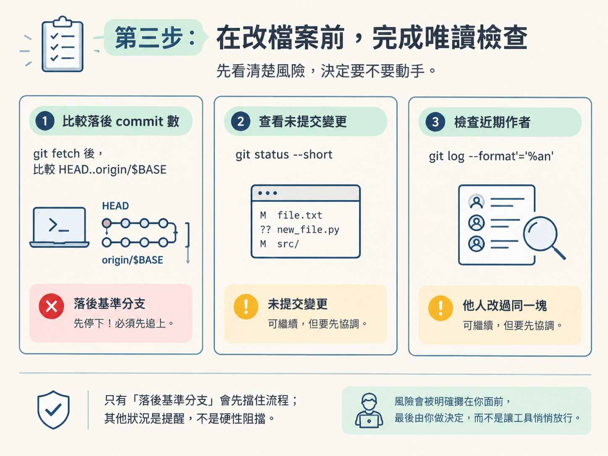
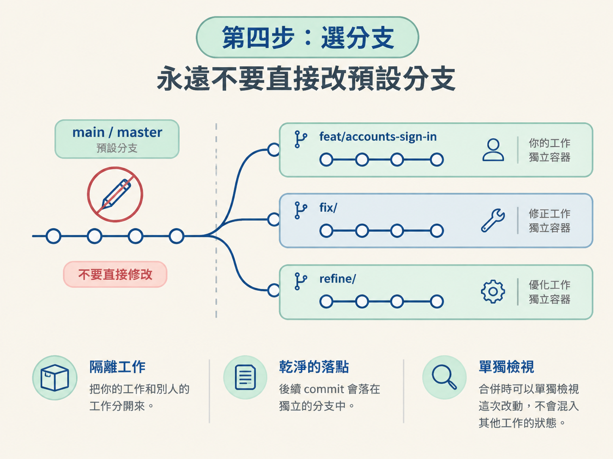

在執行 /develop 前，先確認 skill 會不會主動操作 git，接著選好分支，再檢查 repo 是不是最新、工作區乾不乾淨，以及目前的功能有沒有可能和別人重疊。
前置條件只有兩個：專案是一個 git repo，而且你知道最近的 AGENTS.md 裡 ## Git 區塊寫了什麼。完成後，你會得到一個明確的動手位置：知道能不能讓 skill 管 git，也知道這次改動應該落在哪條分支上。
你準備跑 /develop，卻不知道它會不會直接改目前的分支、自己產生 commit，或在過期的程式碼上繼續工作。先不要按 Enter，先讀最近的 AGENTS.md 裡的 ## Git 區塊。
這個區塊決定所有 git 行為。先確認三個設定：
| 設定 | 它決定什麼 |
|---|---|
integration | on 代表 skill 會主動管理分支和 commit；off 或整個區塊不存在，代表不做主動 git。 |
branch prefix | 建立分支時使用的前綴，預設是 feat/。 |
commit | 提交節奏：per-milestone（預設）、end-of-build、manual。下一節會詳細說明。 |
接著做分流：
integration 是 off，或找不到 ## Git 區塊，skill 就不做主動 git。分支和 commit 由工程師自己管理。做完這一步，你應該已經做出第一個決定：這次由 skill 管 git，還是由你自己管理。

只有 integration 是 on，才需要確認 repo。先執行：
git rev-parse這個指令只是在問：「我現在是不是在一個 git repo 裡？」
如果指令失敗，先初始化 repo，再把既有檔案整理成第一個 commit：
git init
# 接着把目前既有的檔案 stage 進第一個 commit通常不會走到這一步，因為 /audit 往往會在你開啟 integration 時處理好。不過，如果專案已經做到一半才發現沒有版控，這就是補上的保險步驟。
這是動手前最重要的檢查：先看現況，再決定要不要繼續。這些操作只讀不寫，所以即使 integration 是 off，只要專案是 git repo，又不是離線或單人環境，也會照跑；完全用不到時就默默跳過。
先抓一次遠端資訊，再決定比較基準分支。有 main 就用 main，否則用 master：
git fetch
BASE=main # main 不存在時改用 master用下面的指令查看目前分支落後基準分支幾個 commit：
git rev-list --count HEAD..origin/$BASE如果結果大於零，代表你落後了。可能有同事已經修改，甚至已經出貨你準備動的那一段。這時要先停下來提出警告，不要直接在舊狀態上繼續蓋。
接著確認你要碰的範圍是否已經有人留下未提交的修改：
git status --short如果相關區域有未提交變更，先 commit 或 stash，避免這次 build 和既有工作混在一起。這個狀況不會硬性擋住你，但你要清楚知道自己是在什麼狀態上繼續。
如果某個 feature 在 scope 裡是 in-progress，而它對應的程式碼區塊最近又有其他作者的 commit，就先確認是否有人正在處理同一塊。可以用下面的指令查看作者：
git log --format='%an' -- <area>如果看到別人的名字，代表這個功能可能已經有人在做。先協調，再決定要不要接手或繼續。
| 你看到的狀況 | 該給的提醒 | 會擋住你嗎 |
|---|---|---|
落後 origin/$BASE 大於零 | 先 pull，再重跑，因為同事可能已經動過 | 會，先停下來 |
| 要動的區域有未提交改動 | 先 commit 或 stash，避免糾纏 | 不會，堅持的話可以繼續 |
| in-progress 功能被別人改過 | 先協調，確認要不要接手 | 不會，但要先確認 |
這裡的差別要記清楚：只有「落後基準分支」會先擋住流程；其他狀況是提醒，不是硬性阻擋。它會把風險明確攤在你面前，最後由你做決定，而不是讓工具悄悄放行。

唯讀檢查完成後，根據目前所在位置選擇分支：
main 或 master）上：建立新的功能分支，名稱使用 <prefix><feature-slug>，例如 feat/accounts-sign-in。永遠不要直接在預設分支上修改。fix/ 或 refine/。沒有特別指定時，才使用設定裡的預設前綴。分支就像把這次改動暫時放進獨立工作區的容器：它把你的工作和別人的工作隔開，也讓後續 commit 有乾淨的落點。等到要合併時，你可以單獨檢視這次改動，而不會把其他工作的狀態混進來。

完成這一步，你應該已經做出第二個決定：這次工作要沿用哪條分支，或建立哪條新分支。
先讀最近的 AGENTS.md## Git區塊：integration是off或不存在，就不做主動 git；是on才需要管理分支和 commit。動手前抓遠端、確認落後數量、檢查未提交改動，再查看要動的區塊最近是否由別人修改。這些大多是提醒，不是硬性阻擋。最後不要在預設分支上直接修改，要先在功能分支上落腳。
做完這一步，你就有一個確認好的工作起點：repo 狀態看過了，協作風險也攤開了，分支也選好了。接下來才處理 commit：什麼時候提交、三種 commit 模式怎麼選、訊息應該怎麼寫，以及為什麼 push 不在這一站執行。